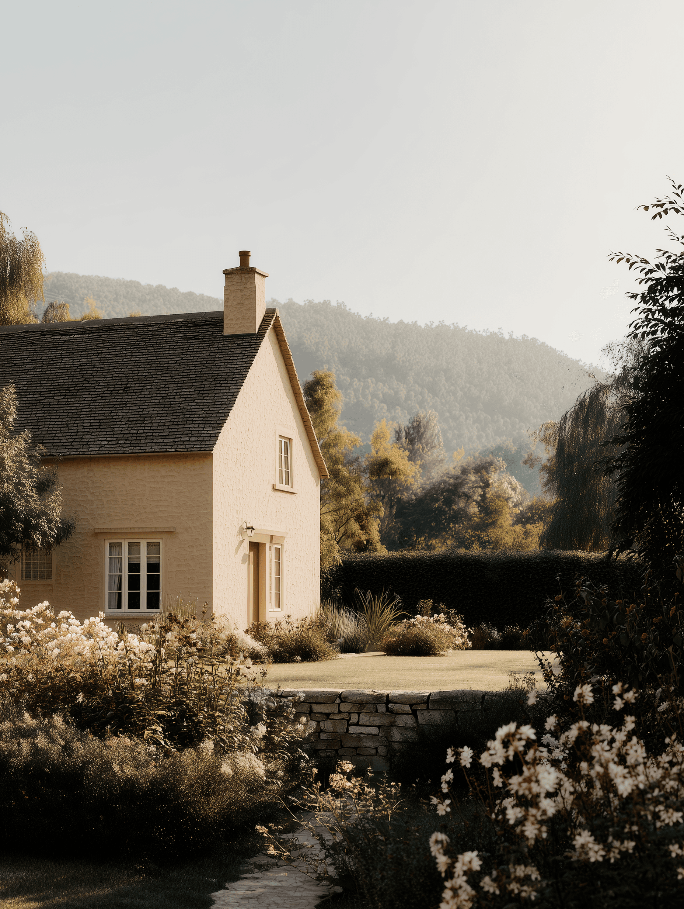
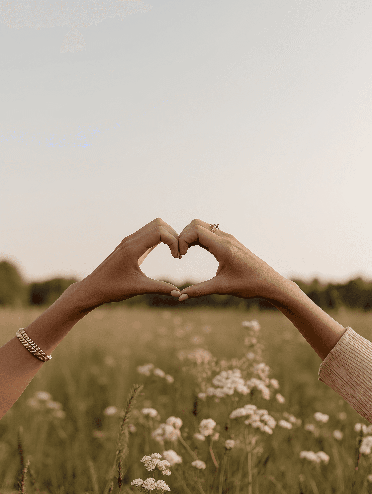

Nuestra Historia
Una biblioteca, un café y cinco años preciosos después…
Nos conocimos en la biblioteca de Oxford, ambos alcanzando el mismo libro. Juan estaba perdido, Juana le ayudó, y él la invitó a un café en lugar de buscar sus apuntes.
Cinco años después, le propuso matrimonio en una colina helada del Lake District. Ella dijo que sí de inmediato. Ahora nos casamos, y no podemos imaginar celebrarlo sin vosotros.